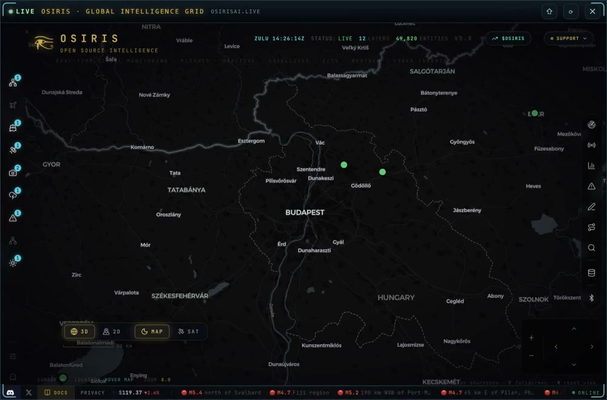

STANDBYResolving route
Agents
Manage your specialists and inspect their task reports
100%
Start a task in Bots. This board shows the same run, each specialist’s progress and its reports.
Ready when you are.
No agent missions yetLong tasks delegated by Echo will appear here with live execution details.
Bots
Give your bot a task
Choose one specialist to do work, or a team to prepare reports and a combined answer. Agents manages the same specialists and inspects these same runs. Your paired phone can follow them.
Runs & results
Now & Next
Reading your current work…
Now
Needs You
Decisions apply to the exact pending action. Expired questions cannot approve another action.
On your phone
Say “send me updates to my phone”. Progress, results and questions for 24 hours. Keep this Mac awake with Echo running. Private work stays here.
Recent work
Second Brain
Remember something
World Intelligence
Osiris · Ready to connect

A view beyond your day
The world, at a glance
Conflict zones and natural hazards from the same Osiris feeds as Echo Phone.
Loading Osiris feeds…
Sources & freshness
USGS tsunami flags describe earthquake observations; they are not official tsunami warnings.
Models & Routing
Choose an available model for Echo’s next request
Model RoutesChanges apply to the active brain
Reading configured models…
MCP Connections
No external MCP servers configured.
Settings
Models, voice, memory, and autonomous behavior